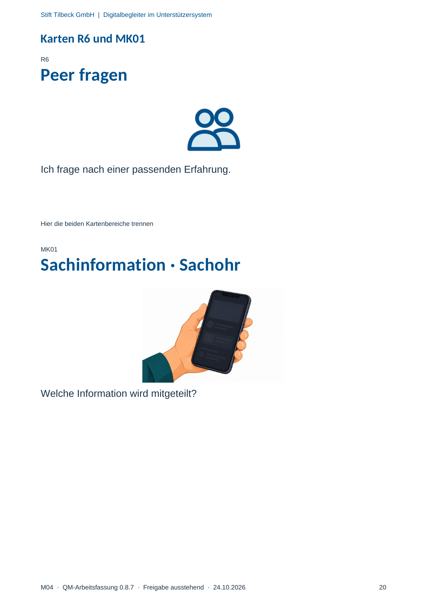

M04 · Originalseite 20
Sachinformation · Sachohr
Original-Druckseite mit MK01. Auf derselben Seite stehen außerdem R6. Diese sind dadurch keine zusätzliche Aufgabe.
Fragen und Ankreuzfelder werden auf dem Ausdruck bearbeitet. Die Lesefassung speichert keine Antworten.
Lesefassung · Seite 20
Stift Tilbeck GmbH | Digitalbegleiter im Unterstützersystem
Karten R6 und MK01
R6
Peer fragen
Ich frage nach einer passenden Erfahrung.
Hier die beiden Kartenbereiche trennen
MK01
Sachinformation · Sachohr
Welche Information wird mitgeteilt?
Originalseite ansehen
